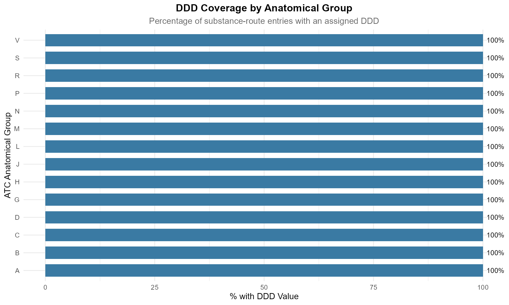

Working with Defined Daily Doses (DDD)
Lucas VHH TRAN
2026-07-14
Source:vignettes/ddd-analysis.Rmd
ddd-analysis.RmdIntroduction
The Defined Daily Dose (DDD) is the cornerstone of quantitative drug utilisation research. It is the assumed average maintenance dose per day for a drug used for its main indication in adults.
⚠️ The DDD is a technical unit of measurement — not a clinical recommendation. It enables comparisons across drugs, regions, and time, but does not tell you what to prescribe for an individual patient.
This vignette covers:
- Understanding DDD values and why many are missing
- Analysing DDD coverage across drug classes
- Computing DDDs from real prescription data
- Comparing DDDs across administration routes
- Common pitfalls and how to avoid them
Loading the Data
codes_path <- system.file("extdata", "WHO_ATC_codes_2026-07-14.csv",
package = "atcddd")
ddd_path <- system.file("extdata", "WHO_ATC_DDD_2026-07-14.csv",
package = "atcddd")
atc_codes <- readr::read_csv(codes_path, show_col_types = FALSE)
atc_ddd <- readr::read_csv(ddd_path, show_col_types = FALSE)
cat(sprintf("Loaded %d DDD entries across %d unique substances",
nrow(atc_ddd),
n_distinct(atc_ddd$atc_code)))
#> Loaded 6218 DDD entries across 5680 unique substancesUnderstanding the DDD Table
The DDD table has a specific structure:
| Column | Description | Example |
|---|---|---|
source_code |
The Level 4 parent page from which the DDD was parsed | N02BE |
atc_code |
The Level 5 substance code | N02BE01 |
atc_name |
Substance name | paracetamol |
ddd |
Defined Daily Dose value | 3 |
uom |
Unit of measurement | g |
adm_r |
Route of administration |
O (oral) |
note |
Additional WHO notes | `` |
The same substance can have multiple DDD entries — one for each route of administration:
# Drugs with multiple administration routes
atc_ddd %>%
count(atc_code, sort = TRUE) %>%
filter(n > 1) %>%
head(10) %>%
left_join(distinct(atc_ddd, atc_code, atc_name), by = "atc_code") %>%
select(atc_code, atc_name, n_routes = n)
#> # A tibble: 10 × 3
#> atc_code atc_name n_routes
#> <chr> <chr> <int>
#> 1 G03CA03 estradiol 10
#> 2 G03BA03 testosterone 6
#> 3 N02CA02 ergotamine 5
#> 4 N07BA01 nicotine 5
#> 5 C01DA02 glyceryl trinitrate 4
#> 6 C01DA08 isosorbide dinitrate 4
#> 7 G03DA04 progesterone 4
#> 8 H01BA02 desmopressin 4
#> 9 N02CC01 sumatriptan 4
#> 10 N05AB03 perphenazine 4Paracetamol appears with 4 routes — oral (O), parenteral (P), rectal (R), and others — each with its own DDD value.
DDD Availability: What to Expect
By Anatomical Group
atc_ddd %>%
filter(!is.na(adm_r), adm_r != "NA", adm_r != "") %>%
mutate(anatomical_group = substr(atc_code, 1, 1)) %>%
group_by(anatomical_group) %>%
summarise(
total_entries = n(),
with_ddd = sum(!is.na(ddd) & ddd != "NA"),
without_ddd = sum(is.na(ddd) | ddd == "NA"),
pct_with_ddd = round(100 * with_ddd / total_entries, 1),
.groups = "drop"
) %>%
arrange(pct_with_ddd)
#> # A tibble: 14 × 5
#> anatomical_group total_entries with_ddd without_ddd pct_with_ddd
#> <chr> <int> <int> <int> <dbl>
#> 1 A 355 355 0 100
#> 2 B 117 117 0 100
#> 3 C 344 344 0 100
#> 4 D 16 16 0 100
#> 5 G 165 165 0 100
#> 6 H 80 80 0 100
#> 7 J 422 422 0 100
#> 8 L 249 249 0 100
#> 9 M 148 148 0 100
#> 10 N 523 523 0 100
#> 11 P 59 59 0 100
#> 12 R 254 254 0 100
#> 13 S 7 7 0 100
#> 14 V 21 21 0 100Visualising DDD Coverage
atc_ddd %>%
filter(!is.na(adm_r), adm_r != "NA", adm_r != "") %>%
mutate(
anatomical_group = substr(atc_code, 1, 1),
has_ddd = !is.na(ddd) & ddd != "NA"
) %>%
count(anatomical_group, has_ddd) %>%
group_by(anatomical_group) %>%
mutate(pct = round(100 * n / sum(n), 1)) %>%
ungroup() %>%
filter(has_ddd) %>%
ggplot(aes(x = reorder(anatomical_group, pct), y = pct, fill = pct)) +
geom_col(width = 0.7) +
geom_text(aes(label = paste0(pct, "%")), hjust = -0.2, size = 3.5) +
scale_fill_viridis_c(option = "mako", direction = -1, guide = "none") +
coord_flip(ylim = c(0, 100)) +
labs(
title = "DDD Coverage by Anatomical Group",
subtitle = "Percentage of substance-route entries with an assigned DDD",
x = "ATC Anatomical Group",
y = "% with DDD Value"
) +
theme_minimal(base_size = 12) +
theme(
plot.title = element_text(face = "bold", hjust = 0.5),
plot.subtitle = element_text(hjust = 0.5, color = "grey40")
)
Interpretation:
- High coverage (>70%): Systemic drugs — antiinfectives (J), cardiovascular (C), nervous system (N). These have well-defined daily doses.
- Low coverage (<30%): Topicals (D), sensory organs (S) — dosing is patient-specific and depends on treated area or condition severity.
Why DDDs Are Missing
The WHO deliberately withholds DDDs for specific categories. This is not a data quality issue — it is by design.
# Categorise the nature of missing DDDs
atc_ddd %>%
mutate(has_ddd = !is.na(ddd) & ddd != "NA") %>%
count(has_ddd) %>%
mutate(pct = round(100 * n / sum(n), 1))
#> # A tibble: 2 × 3
#> has_ddd n pct
#> <lgl> <int> <dbl>
#> 1 FALSE 3450 55.5
#> 2 TRUE 2768 44.5Categories That Typically Lack DDDs
| Category | Example Codes | Reason |
|---|---|---|
| Topical preparations | D01-D07 | Variable absorption; dose depends on body surface area |
| Fixed-dose combinations | Codes ending in digits (e.g., C09BA02) | WHO policy: no DDD for combination products |
| Ophthalmics / otics | S01-S03 | Local application, minimal systemic absorption |
| Vaccines | J07 | Prophylactic, not daily dosing |
| Contrast media | V08 | Diagnostic use, not therapeutic |
| Herbal / alternative | Various | Lack of standardised active ingredient quantities |
Computing DDDs from Prescription Data
This is the core pharmacoepidemiology use case: you have prescription records with drug codes, quantities, and strengths, and you need DDDs per patient.
Worked Example
# Example: prescription records for 3 patients
prescriptions <- tibble(
patient_id = c(1, 1, 2, 3, 3),
atc_code = c("N02BE01", "C10AA05", "N02BE01", "A02BC01", "C10AA05"),
quantity = c(30, 30, 60, 28, 90), # tablets/capsules
strength = c(500, 20, 500, 20, 40), # mg per unit
unit = c("mg", "mg", "mg", "mg", "mg")
)
# Join with DDD data (using the oral route, adm_r = "O")
ddd_ref <- atc_ddd %>%
filter(!is.na(ddd), ddd != "NA", adm_r == "O") %>%
select(atc_code, atc_name, ddd, uom) %>%
mutate(ddd_value = as.numeric(ddd))
prescriptions %>%
left_join(ddd_ref, by = "atc_code") %>%
mutate(
# Convert DDD to mg if needed
ddd_mg = case_when(
uom == "g" ~ ddd_value * 1000,
uom == "mg" ~ ddd_value,
uom == "mcg" ~ ddd_value / 1000,
TRUE ~ NA_real_
),
total_mg = quantity * strength,
n_ddd = total_mg / ddd_mg
) %>%
select(patient_id, atc_code, atc_name, quantity, strength,
total_mg, ddd_mg, n_ddd)
#> # A tibble: 5 × 8
#> patient_id atc_code atc_name quantity strength total_mg ddd_mg n_ddd
#> <dbl> <chr> <chr> <dbl> <dbl> <dbl> <dbl> <dbl>
#> 1 1 N02BE01 paracetamol 30 500 15000 3000 5
#> 2 1 C10AA05 atorvastatin 30 20 600 20 30
#> 3 2 N02BE01 paracetamol 60 500 30000 3000 10
#> 4 3 A02BC01 omeprazole 28 20 560 20 28
#> 5 3 C10AA05 atorvastatin 90 40 3600 20 180Aggregate by Patient
prescriptions %>%
left_join(
atc_ddd %>%
filter(!is.na(ddd), ddd != "NA", adm_r == "O") %>%
mutate(ddd_value = as.numeric(ddd)) %>%
select(atc_code, atc_name, ddd_value, uom),
by = "atc_code"
) %>%
mutate(
ddd_mg = case_when(
uom == "g" ~ ddd_value * 1000,
uom == "mg" ~ ddd_value,
uom == "mcg" ~ ddd_value / 1000,
TRUE ~ NA_real_
),
total_mg = quantity * strength,
n_ddd = total_mg / ddd_mg
) %>%
group_by(patient_id) %>%
summarise(
n_drugs = n(),
total_ddds = sum(n_ddd, na.rm = TRUE),
.groups = "drop"
)
#> # A tibble: 3 × 3
#> patient_id n_drugs total_ddds
#> <dbl> <int> <dbl>
#> 1 1 2 35
#> 2 2 1 10
#> 3 3 2 208DDD per 1000 Inhabitants per Day (DID)
The standard population-level metric in drug utilisation research:
# Hypothetical: national paracetamol consumption over 1 year
total_paracetamol_ddds <- 850000000 # 850 million DDDs
population <- 68000000 # 68 million inhabitants
days_in_year <- 365
did <- (total_paracetamol_ddds / (population * days_in_year)) * 1000
cat(sprintf("Paracetamol DID: %.1f DDD per 1000 inhabitants per day", did))
#> Paracetamol DID: 34.2 DDD per 1000 inhabitants per dayA DID of 34.3 means that, on any given day, approximately 34 out of every 1000 people in the population use one DDD of paracetamol.
DDD by Route of Administration
Different routes often have different DDDs for the same drug:
atc_ddd %>%
filter(!is.na(ddd), ddd != "NA", !is.na(adm_r), adm_r != "NA", adm_r != "") %>%
mutate(
adm_label = case_when(
adm_r == "O" ~ "Oral",
adm_r == "P" ~ "Parenteral",
adm_r == "R" ~ "Rectal",
adm_r == "N" ~ "Nasal",
adm_r == "SL" ~ "Sublingual",
adm_r == "TD" ~ "Transdermal",
adm_r == "Inhal" ~ "Inhalation",
adm_r == "V" ~ "Vaginal",
TRUE ~ adm_r
)
) %>%
count(adm_label, sort = TRUE) %>%
mutate(pct = round(100 * n / sum(n), 1)) %>%
head(10)
#> # A tibble: 10 × 3
#> adm_label n pct
#> <chr> <int> <dbl>
#> 1 Oral 1670 60.5
#> 2 Parenteral 817 29.6
#> 3 Rectal 79 2.9
#> 4 Nasal 38 1.4
#> 5 Vaginal 37 1.3
#> 6 Inhal.solution 25 0.9
#> 7 Inhal.aerosol 23 0.8
#> 8 Inhal.powder 23 0.8
#> 9 Sublingual 16 0.6
#> 10 Transdermal 14 0.5Oral (O) and parenteral (P) routes dominate the DDD assignments — reflecting the systemic drugs for which DDDs are most useful.
Cross-Referencing DDDs With Chemical Classes
Average DDD by Therapeutic Class
# Join DDD data with Level 4 classification
atc_ddd %>%
filter(!is.na(ddd), ddd != "NA", adm_r == "O") %>%
mutate(
ddd_value = as.numeric(ddd),
class_code = substr(atc_code, 1, 5) # Level 4 chemical class
) %>%
group_by(class_code) %>%
summarise(
n_drugs = n_distinct(atc_code),
mean_ddd = mean(ddd_value, na.rm = TRUE),
median_ddd = median(ddd_value, na.rm = TRUE),
min_ddd = min(ddd_value, na.rm = TRUE),
max_ddd = max(ddd_value, na.rm = TRUE),
.groups = "drop"
) %>%
left_join(
atc_codes %>% filter(nchar(atc_code) == 5) %>% select(atc_code, class_name = atc_name),
by = c("class_code" = "atc_code")
) %>%
filter(n_drugs >= 3) %>%
arrange(desc(mean_ddd)) %>%
select(class_code, class_name, n_drugs, mean_ddd, median_ddd) %>%
head(10)
#> # A tibble: 10 × 5
#> class_code class_name n_drugs mean_ddd median_ddd
#> <chr> <chr> <int> <dbl> <dbl>
#> 1 C04AA 2-amino-1-phenylethanol derivatives 3 55 60
#> 2 N07CA Antivertigo preparations 4 53.5 57
#> 3 A04AD Other antiemetics 4 45.8 9
#> 4 L01EE Mitogen-activated protein kinase (MEK… 3 45.7 45
#> 5 N05AE Indole derivatives 5 41.2 50
#> 6 L01EB Epidermal growth factor receptor (EGF… 6 40.9 42.5
#> 7 B03AB Iron trivalent, oral preparations 6 38.5 30.4
#> 8 R05DB Other cough suppressants 15 37.5 25
#> 9 C03DA Aldosterone antagonists 3 35.8 37.5
#> 10 C01DA Organic nitrates 7 35.0 30Large differences in mean DDD across classes reflect real pharmacological differences — antibiotics need grams per day, while potent drugs like ACE inhibitors need milligrams.
DDD Unit Distribution
# What units do DDDs use?
atc_ddd %>%
filter(!is.na(ddd), ddd != "NA", !is.na(uom), uom != "NA", uom != "") %>%
count(uom, sort = TRUE) %>%
mutate(pct = round(100 * n / sum(n), 1))
#> # A tibble: 10 × 3
#> uom n pct
#> <chr> <int> <dbl>
#> 1 g 1331 48.1
#> 2 mg 1278 46.2
#> 3 U 58 2.1
#> 4 mcg 54 2
#> 5 TU 19 0.7
#> 6 MU 14 0.5
#> 7 ml 8 0.3
#> 8 LSU 2 0.1
#> 9 tablet 2 0.1
#> 10 mmol 1 0The three most common DDD units are:
| Unit | Typical for | Example |
|---|---|---|
| g (grams) | Antibiotics, analgesics, old drugs with high doses | amoxicillin: 1.5 g |
| mg (milligrams) | Modern drugs with lower effective doses | atorvastatin: 20 mg |
| mcg (micrograms) | Highly potent drugs | levothyroxine: 150 mcg |
Common Pitfalls
1. Ignoring Route of Administration
# Paracetamol has different DDDs for different routes
atc_ddd %>%
filter(atc_code == "N02BE01", !is.na(ddd), ddd != "NA") %>%
select(atc_code, atc_name, ddd, uom, adm_r)
#> # A tibble: 3 × 5
#> atc_code atc_name ddd uom adm_r
#> <chr> <chr> <dbl> <chr> <chr>
#> 1 N02BE01 paracetamol 3 g O
#> 2 N02BE01 paracetamol 3 g P
#> 3 N02BE01 paracetamol 3 g RIf you compute DDDs assuming the oral route when patients received IV
paracetamol, your numbers will be wrong. Always match on
adm_r.
2. Unit Mismatches
A DDD of 3 g paired with tablets of 500 mg requires unit conversion:
ddd_g <- 3
ddd_mg <- ddd_g * 1000 # 3000 mg
tablets_per_ddd <- ddd_mg / 500 # 6 tablets per DDDLive DDD Retrieval
For the latest DDD values, use the live API:
# Get current DDD data for a drug from WHO
aspirin_live <- get_atc_data("N02BA01")
aspirin_live %>% select(atc_code, atc_name, ddd, uom, adm_r, note)Key Takeaways
DDDs enable apples-to-apples comparisons — they normalise drug consumption across different strengths, package sizes, and formulations.
Match by route of administration (
adm_r) — the same drug can have different DDDs for oral, parenteral, and rectal routes.Convert units carefully — DDDs come in g, mg, mcg, TU, MU, and other units. Always convert to a common unit before computing total DDDs.
Document missing DDDs — if 40% of your study drugs lack DDDs, report it. Transparency about coverage is more important than perfect coverage.
DDD ≠ clinical dose — use DDD for population-level comparisons, not individual patient management.
Session Information
sessionInfo()
#> R version 4.5.0 (2025-04-11 ucrt)
#> Platform: x86_64-w64-mingw32/x64
#> Running under: Windows 11 x64 (build 26200)
#>
#> Matrix products: default
#> LAPACK version 3.12.1
#>
#> locale:
#> [1] LC_COLLATE=English_United States.utf8
#> [2] LC_CTYPE=English_United States.utf8
#> [3] LC_MONETARY=English_United States.utf8
#> [4] LC_NUMERIC=C
#> [5] LC_TIME=English_United States.utf8
#>
#> time zone: Europe/Zurich
#> tzcode source: internal
#>
#> attached base packages:
#> [1] stats graphics grDevices utils datasets methods base
#>
#> other attached packages:
#> [1] stringr_1.6.0 tidyr_1.3.2 ggplot2_4.0.3 dplyr_1.2.1 atcddd_0.2.0
#>
#> loaded via a namespace (and not attached):
#> [1] utf8_1.2.6 sass_0.4.10 generics_0.1.4 stringi_1.8.7
#> [5] hms_1.1.4 digest_0.6.39 magrittr_2.0.5 evaluate_1.0.5
#> [9] grid_4.5.0 RColorBrewer_1.1-3 fastmap_1.2.0 jsonlite_2.0.0
#> [13] purrr_1.2.2 viridisLite_0.4.3 scales_1.4.0 textshaping_1.0.5
#> [17] jquerylib_0.1.4 cli_3.6.5 crayon_1.5.3 rlang_1.2.0
#> [21] bit64_4.8.0 withr_3.0.2 cachem_1.1.0 yaml_2.3.12
#> [25] otel_0.2.0 parallel_4.5.0 tools_4.5.0 tzdb_0.5.0
#> [29] memoise_2.0.1 vctrs_0.7.3 R6_2.6.1 lifecycle_1.0.5
#> [33] fs_2.1.0 htmlwidgets_1.6.4 bit_4.6.0 vroom_1.7.1
#> [37] ragg_1.5.2 pkgconfig_2.0.3 desc_1.4.3 pkgdown_2.2.0
#> [41] pillar_1.11.1 bslib_0.10.0 gtable_0.3.6 glue_1.8.1
#> [45] systemfonts_1.3.2 xfun_0.57 tibble_3.3.1 tidyselect_1.2.1
#> [49] knitr_1.51 dichromat_2.0-0.1 farver_2.1.2 htmltools_0.5.9
#> [53] labeling_0.4.3 rmarkdown_2.31 readr_2.2.0 compiler_4.5.0
#> [57] S7_0.2.2